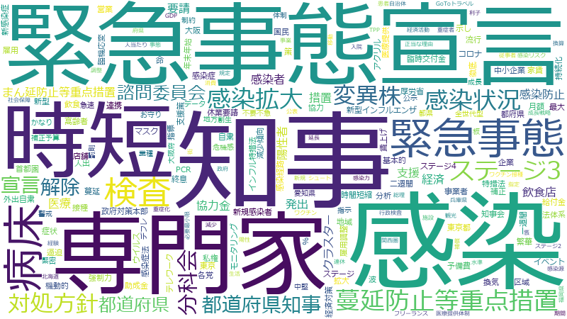

西村康稔

原子力経済被害担当
ＧＸ実行推進担当
産業競争力担当
ロシア経済分野協力担当
内閣府特命担当大臣（原子力損害賠償・廃炉等支援機構）[現職]
支援 、エネルギー 、企業 、事業 、地域 、価格 、投資 、措置 、原子力 、中小企業 、事業者 、連携 、導入 、エネ 、利用 、技術 、安定供給 、負担 、政府 、経済 、強化 、観点 、経済産業省 、審査 、課題 、規制 、産業 、整備 、電力 、推進 、ガス 、国民 、仕組み 、政策 、燃料 、規模 、協力 、成長 、脱 、開発 、世界 、委員会 、拡大 、取引 、炭素 、安全性 、供給 、移行 、電気 、補助金 、専門家 、感染 、環境 、削減 、構築 、自治体 、体制 、炭素化 、転嫁 、将来 、料金 、最大限 、カーボンニュートラル 、全国 、安全 、検査 、サプライチェーン 、水素 、危機 、型 、目標 、使用 、技術開発 、開始 、国内 、申請 、稼働 、各国 、基準 、LNG 、市場 、事故 、排出 、加速 、厚生労働省 、効果 、総理大臣 、調査 、運転期間 、保証 、経営 、半導体 、公表 、緊急事態 、人材 、調整 、イノベーション 、医療 、業務 、令和
原子力 、支援 、エネルギー 、エネ 、中小企業 、価格 、投資 、安定供給 、企業 、事業者 、事業 、地域 、措置 、導入 、電力 、経済産業省 、ガス 、連携 、技術 、脱 、燃料 、LNG 、運転期間 、審査 、利用 、炭素 、負担 、炭素化 、規制 、転嫁 、規制委員会 、経済 、産業 、商工中金 、水素 、電気 、料金 、強化 、原子力規制 、廃炉 、成長 、カーボンプライシング 、感染 、カーボンニュートラル 、政府 、安全性 、取引 、技術開発 、サプライチェーン 、観点 、半導体 、排出 、賦課金 、移行 、補助金 、稼働 、仕組み 、供給 、削減 、課題 、病床 、排出量 、緊急事態 、整備 、規模 、省エネ 、保証 、最大限 、電源 、政策 、推進 、開発 、需要家 、検査 、国民 、専門家 、電気料金 、協力 、加速 、世界 、危機 、委員会 、イノベーション 、市場 、自動車 、各国 、事故 、グリー 、拡大 、接種 、陽性者数 、基本方針 、アンモニア 、発電 、系統 、化石燃料 、経済成長 、自治体 、融資 、将来
原子力
| 言及回数 | 538回 |
| 言及発言者数（参考人を含む） | 366人 |
支援
| 言及回数 | 1070回 |
| 言及発言者数（参考人を含む） | 1542人 |
エネルギー
| 言及回数 | 677回 |
| 言及発言者数（参考人を含む） | 765人 |
エネ
| 言及回数 | 423回 |
| 言及発言者数（参考人を含む） | 271人 |
中小企業
| 言及回数 | 531回 |
| 言及発言者数（参考人を含む） | 546人 |
価格
| 言及回数 | 578回 |
| 言及発言者数（参考人を含む） | 802人 |
投資
| 言及回数 | 572回 |
| 言及発言者数（参考人を含む） | 823人 |
安定供給
| 言及回数 | 383回 |
| 言及発言者数（参考人を含む） | 380人 |
企業
| 言及回数 | 610回 |
| 言及発言者数（参考人を含む） | 1208人 |
事業者
| 言及回数 | 519回 |
| 言及発言者数（参考人を含む） | 1086人 |
事業
| 言及回数 | 588回 |
| 言及発言者数（参考人を含む） | 1357人 |
地域
| 言及回数 | 581回 |
| 言及発言者数（参考人を含む） | 1422人 |
措置
| 言及回数 | 548回 |
| 言及発言者数（参考人を含む） | 1325人 |
導入
| 言及回数 | 486回 |
| 言及発言者数（参考人を含む） | 1168人 |
電力
| 言及回数 | 286回 |
| 言及発言者数（参考人を含む） | 458人 |
経済産業省
| 言及回数 | 336回 |
| 言及発言者数（参考人を含む） | 669人 |
ガス
| 言及回数 | 278回 |
| 言及発言者数（参考人を含む） | 463人 |
連携
| 言及回数 | 488回 |
| 言及発言者数（参考人を含む） | 1460人 |
技術
| 言及回数 | 404回 |
| 言及発言者数（参考人を含む） | 1127人 |
脱
| 言及回数 | 236回 |
| 言及発言者数（参考人を含む） | 367人 |
燃料
| 言及回数 | 265回 |
| 言及発言者数（参考人を含む） | 501人 |
LNG
| 言及回数 | 170回 |
| 言及発言者数（参考人を含む） | 141人 |
運転期間
| 言及回数 | 158回 |
| 言及発言者数（参考人を含む） | 111人 |
審査
| 言及回数 | 327回 |
| 言及発言者数（参考人を含む） | 853人 |
利用
| 言及回数 | 410回 |
| 言及発言者数（参考人を含む） | 1281人 |
炭素
| 言及回数 | 224回 |
| 言及発言者数（参考人を含む） | 383人 |
負担
| 言及回数 | 374回 |
| 言及発言者数（参考人を含む） | 1132人 |
炭素化
| 言及回数 | 199回 |
| 言及発言者数（参考人を含む） | 294人 |
規制
| 言及回数 | 310回 |
| 言及発言者数（参考人を含む） | 870人 |
転嫁
| 言及回数 | 198回 |
| 言及発言者数（参考人を含む） | 313人 |
規制委員会
| 言及回数 | 144回 |
| 言及発言者数（参考人を含む） | 106人 |
経済
| 言及回数 | 357回 |
| 言及発言者数（参考人を含む） | 1151人 |
産業
| 言及回数 | 309回 |
| 言及発言者数（参考人を含む） | 900人 |
商工中金
| 言及回数 | 114回 |
| 言及発言者数（参考人を含む） | 42人 |
水素
| 言及回数 | 177回 |
| 言及発言者数（参考人を含む） | 258人 |
電気
| 言及回数 | 212回 |
| 言及発言者数（参考人を含む） | 435人 |
料金
| 言及回数 | 193回 |
| 言及発言者数（参考人を含む） | 341人 |
強化
| 言及回数 | 354回 |
| 言及発言者数（参考人を含む） | 1335人 |
原子力規制
| 言及回数 | 145回 |
| 言及発言者数（参考人を含む） | 167人 |
廃炉
| 言及回数 | 143回 |
| 言及発言者数（参考人を含む） | 163人 |
成長
| 言及回数 | 252回 |
| 言及発言者数（参考人を含む） | 758人 |
カーボンプライシング
| 言及回数 | 125回 |
| 言及発言者数（参考人を含む） | 101人 |
感染
| 言及回数 | 206回 |
| 言及発言者数（参考人を含む） | 498人 |
カーボンニュートラル
| 言及回数 | 189回 |
| 言及発言者数（参考人を含む） | 406人 |
政府
| 言及回数 | 361回 |
| 言及発言者数（参考人を含む） | 1432人 |
安全性
| 言及回数 | 221回 |
| 言及発言者数（参考人を含む） | 603人 |
取引
| 言及回数 | 224回 |
| 言及発言者数（参考人を含む） | 631人 |
技術開発
| 言及回数 | 174回 |
| 言及発言者数（参考人を含む） | 343人 |
サプライチェーン
| 言及回数 | 184回 |
| 言及発言者数（参考人を含む） | 416人 |
観点
| 言及回数 | 354回 |
| 言及発言者数（参考人を含む） | 1477人 |
半導体
| 言及回数 | 154回 |
| 言及発言者数（参考人を含む） | 262人 |
排出
| 言及回数 | 165回 |
| 言及発言者数（参考人を含む） | 323人 |
賦課金
| 言及回数 | 121回 |
| 言及発言者数（参考人を含む） | 123人 |
移行
| 言及回数 | 212回 |
| 言及発言者数（参考人を含む） | 640人 |
補助金
| 言及回数 | 210回 |
| 言及発言者数（参考人を含む） | 645人 |
稼働
| 言及回数 | 172回 |
| 言及発言者数（参考人を含む） | 405人 |
仕組み
| 言及回数 | 273回 |
| 言及発言者数（参考人を含む） | 1121人 |
供給
| 言及回数 | 216回 |
| 言及発言者数（参考人を含む） | 740人 |
削減
| 言及回数 | 204回 |
| 言及発言者数（参考人を含む） | 666人 |
課題
| 言及回数 | 320回 |
| 言及発言者数（参考人を含む） | 1478人 |
病床
| 言及回数 | 134回 |
| 言及発言者数（参考人を含む） | 231人 |
排出量
| 言及回数 | 132回 |
| 言及発言者数（参考人を含む） | 226人 |
緊急事態
| 言及回数 | 153回 |
| 言及発言者数（参考人を含む） | 363人 |
整備
| 言及回数 | 302回 |
| 言及発言者数（参考人を含む） | 1413人 |
規模
| 言及回数 | 263回 |
| 言及発言者数（参考人を含む） | 1155人 |
省エネ
| 言及回数 | 137回 |
| 言及発言者数（参考人を含む） | 270人 |
保証
| 言及回数 | 155回 |
| 言及発言者数（参考人を含む） | 386人 |
最大限
| 言及回数 | 192回 |
| 言及発言者数（参考人を含む） | 654人 |
電源
| 言及回数 | 132回 |
| 言及発言者数（参考人を含む） | 251人 |
政策
| 言及回数 | 266回 |
| 言及発言者数（参考人を含む） | 1225人 |
推進
| 言及回数 | 281回 |
| 言及発言者数（参考人を含む） | 1339人 |
開発
| 言及回数 | 235回 |
| 言及発言者数（参考人を含む） | 1027人 |
需要家
| 言及回数 | 88回 |
| 言及発言者数（参考人を含む） | 60人 |
検査
| 言及回数 | 186回 |
| 言及発言者数（参考人を含む） | 667人 |
国民
| 言及回数 | 275回 |
| 言及発言者数（参考人を含む） | 1366人 |
専門家
| 言及回数 | 208回 |
| 言及発言者数（参考人を含む） | 865人 |
電気料金
| 言及回数 | 114回 |
| 言及発言者数（参考人を含む） | 187人 |
協力
| 言及回数 | 260回 |
| 言及発言者数（参考人を含む） | 1284人 |
加速
| 言及回数 | 164回 |
| 言及発言者数（参考人を含む） | 564人 |
世界
| 言及回数 | 229回 |
| 言及発言者数（参考人を含む） | 1090人 |
危機
| 言及回数 | 176回 |
| 言及発言者数（参考人を含む） | 691人 |
委員会
| 言及回数 | 228回 |
| 言及発言者数（参考人を含む） | 1147人 |
イノベーション
| 言及回数 | 151回 |
| 言及発言者数（参考人を含む） | 510人 |
市場
| 言及回数 | 170回 |
| 言及発言者数（参考人を含む） | 691人 |
自動車
| 言及回数 | 145回 |
| 言及発言者数（参考人を含む） | 490人 |
各国
| 言及回数 | 171回 |
| 言及発言者数（参考人を含む） | 712人 |
事故
| 言及回数 | 165回 |
| 言及発言者数（参考人を含む） | 663人 |
グリー
| 言及回数 | 131回 |
| 言及発言者数（参考人を含む） | 383人 |
拡大
| 言及回数 | 225回 |
| 言及発言者数（参考人を含む） | 1183人 |
接種
| 言及回数 | 122回 |
| 言及発言者数（参考人を含む） | 320人 |
陽性者数
| 言及回数 | 71回 |
| 言及発言者数（参考人を含む） | 42人 |
基本方針
| 言及回数 | 147回 |
| 言及発言者数（参考人を含む） | 546人 |
アンモニア
| 言及回数 | 94回 |
| 言及発言者数（参考人を含む） | 150人 |
発電
| 言及回数 | 119回 |
| 言及発言者数（参考人を含む） | 322人 |
系統
| 言及回数 | 108回 |
| 言及発言者数（参考人を含む） | 241人 |
化石燃料
| 言及回数 | 101回 |
| 言及発言者数（参考人を含む） | 194人 |
経済成長
| 言及回数 | 123回 |
| 言及発言者数（参考人を含む） | 360人 |
自治体
| 言及回数 | 201回 |
| 言及発言者数（参考人を含む） | 1052人 |
融資
| 言及回数 | 118回 |
| 言及発言者数（参考人を含む） | 322人 |
将来
| 言及回数 | 193回 |
| 言及発言者数（参考人を含む） | 988人 |
支援
| 言及回数 | 1070回 |
| 言及発言者数（参考人を含む） | 1542人 |
エネルギー
| 言及回数 | 677回 |
| 言及発言者数（参考人を含む） | 765人 |
企業
| 言及回数 | 610回 |
| 言及発言者数（参考人を含む） | 1208人 |
事業
| 言及回数 | 588回 |
| 言及発言者数（参考人を含む） | 1357人 |
地域
| 言及回数 | 581回 |
| 言及発言者数（参考人を含む） | 1422人 |
価格
| 言及回数 | 578回 |
| 言及発言者数（参考人を含む） | 802人 |
投資
| 言及回数 | 572回 |
| 言及発言者数（参考人を含む） | 823人 |
措置
| 言及回数 | 548回 |
| 言及発言者数（参考人を含む） | 1325人 |
原子力
| 言及回数 | 538回 |
| 言及発言者数（参考人を含む） | 366人 |
中小企業
| 言及回数 | 531回 |
| 言及発言者数（参考人を含む） | 546人 |
事業者
| 言及回数 | 519回 |
| 言及発言者数（参考人を含む） | 1086人 |
連携
| 言及回数 | 488回 |
| 言及発言者数（参考人を含む） | 1460人 |
導入
| 言及回数 | 486回 |
| 言及発言者数（参考人を含む） | 1168人 |
エネ
| 言及回数 | 423回 |
| 言及発言者数（参考人を含む） | 271人 |
利用
| 言及回数 | 410回 |
| 言及発言者数（参考人を含む） | 1281人 |
技術
| 言及回数 | 404回 |
| 言及発言者数（参考人を含む） | 1127人 |
安定供給
| 言及回数 | 383回 |
| 言及発言者数（参考人を含む） | 380人 |
負担
| 言及回数 | 374回 |
| 言及発言者数（参考人を含む） | 1132人 |
政府
| 言及回数 | 361回 |
| 言及発言者数（参考人を含む） | 1432人 |
経済
| 言及回数 | 357回 |
| 言及発言者数（参考人を含む） | 1151人 |
強化
| 言及回数 | 354回 |
| 言及発言者数（参考人を含む） | 1335人 |
観点
| 言及回数 | 354回 |
| 言及発言者数（参考人を含む） | 1477人 |
経済産業省
| 言及回数 | 336回 |
| 言及発言者数（参考人を含む） | 669人 |
審査
| 言及回数 | 327回 |
| 言及発言者数（参考人を含む） | 853人 |
課題
| 言及回数 | 320回 |
| 言及発言者数（参考人を含む） | 1478人 |
規制
| 言及回数 | 310回 |
| 言及発言者数（参考人を含む） | 870人 |
産業
| 言及回数 | 309回 |
| 言及発言者数（参考人を含む） | 900人 |
整備
| 言及回数 | 302回 |
| 言及発言者数（参考人を含む） | 1413人 |
電力
| 言及回数 | 286回 |
| 言及発言者数（参考人を含む） | 458人 |
推進
| 言及回数 | 281回 |
| 言及発言者数（参考人を含む） | 1339人 |
ガス
| 言及回数 | 278回 |
| 言及発言者数（参考人を含む） | 463人 |
国民
| 言及回数 | 275回 |
| 言及発言者数（参考人を含む） | 1366人 |
仕組み
| 言及回数 | 273回 |
| 言及発言者数（参考人を含む） | 1121人 |
政策
| 言及回数 | 266回 |
| 言及発言者数（参考人を含む） | 1225人 |
燃料
| 言及回数 | 265回 |
| 言及発言者数（参考人を含む） | 501人 |
規模
| 言及回数 | 263回 |
| 言及発言者数（参考人を含む） | 1155人 |
協力
| 言及回数 | 260回 |
| 言及発言者数（参考人を含む） | 1284人 |
成長
| 言及回数 | 252回 |
| 言及発言者数（参考人を含む） | 758人 |
脱
| 言及回数 | 236回 |
| 言及発言者数（参考人を含む） | 367人 |
開発
| 言及回数 | 235回 |
| 言及発言者数（参考人を含む） | 1027人 |
世界
| 言及回数 | 229回 |
| 言及発言者数（参考人を含む） | 1090人 |
委員会
| 言及回数 | 228回 |
| 言及発言者数（参考人を含む） | 1147人 |
拡大
| 言及回数 | 225回 |
| 言及発言者数（参考人を含む） | 1183人 |
取引
| 言及回数 | 224回 |
| 言及発言者数（参考人を含む） | 631人 |
炭素
| 言及回数 | 224回 |
| 言及発言者数（参考人を含む） | 383人 |
安全性
| 言及回数 | 221回 |
| 言及発言者数（参考人を含む） | 603人 |
供給
| 言及回数 | 216回 |
| 言及発言者数（参考人を含む） | 740人 |
移行
| 言及回数 | 212回 |
| 言及発言者数（参考人を含む） | 640人 |
電気
| 言及回数 | 212回 |
| 言及発言者数（参考人を含む） | 435人 |
補助金
| 言及回数 | 210回 |
| 言及発言者数（参考人を含む） | 645人 |
専門家
| 言及回数 | 208回 |
| 言及発言者数（参考人を含む） | 865人 |
感染
| 言及回数 | 206回 |
| 言及発言者数（参考人を含む） | 498人 |
環境
| 言及回数 | 206回 |
| 言及発言者数（参考人を含む） | 1339人 |
削減
| 言及回数 | 204回 |
| 言及発言者数（参考人を含む） | 666人 |
構築
| 言及回数 | 201回 |
| 言及発言者数（参考人を含む） | 1071人 |
自治体
| 言及回数 | 201回 |
| 言及発言者数（参考人を含む） | 1052人 |
体制
| 言及回数 | 200回 |
| 言及発言者数（参考人を含む） | 1243人 |
炭素化
| 言及回数 | 199回 |
| 言及発言者数（参考人を含む） | 294人 |
転嫁
| 言及回数 | 198回 |
| 言及発言者数（参考人を含む） | 313人 |
将来
| 言及回数 | 193回 |
| 言及発言者数（参考人を含む） | 988人 |
料金
| 言及回数 | 193回 |
| 言及発言者数（参考人を含む） | 341人 |
最大限
| 言及回数 | 192回 |
| 言及発言者数（参考人を含む） | 654人 |
カーボンニュートラル
| 言及回数 | 189回 |
| 言及発言者数（参考人を含む） | 406人 |
全国
| 言及回数 | 189回 |
| 言及発言者数（参考人を含む） | 1156人 |
安全
| 言及回数 | 189回 |
| 言及発言者数（参考人を含む） | 1137人 |
検査
| 言及回数 | 186回 |
| 言及発言者数（参考人を含む） | 667人 |
サプライチェーン
| 言及回数 | 184回 |
| 言及発言者数（参考人を含む） | 416人 |
水素
| 言及回数 | 177回 |
| 言及発言者数（参考人を含む） | 258人 |
危機
| 言及回数 | 176回 |
| 言及発言者数（参考人を含む） | 691人 |
型
| 言及回数 | 176回 |
| 言及発言者数（参考人を含む） | 926人 |
目標
| 言及回数 | 176回 |
| 言及発言者数（参考人を含む） | 952人 |
使用
| 言及回数 | 174回 |
| 言及発言者数（参考人を含む） | 986人 |
技術開発
| 言及回数 | 174回 |
| 言及発言者数（参考人を含む） | 343人 |
開始
| 言及回数 | 173回 |
| 言及発言者数（参考人を含む） | 924人 |
国内
| 言及回数 | 172回 |
| 言及発言者数（参考人を含む） | 1018人 |
申請
| 言及回数 | 172回 |
| 言及発言者数（参考人を含む） | 853人 |
稼働
| 言及回数 | 172回 |
| 言及発言者数（参考人を含む） | 405人 |
各国
| 言及回数 | 171回 |
| 言及発言者数（参考人を含む） | 712人 |
基準
| 言及回数 | 171回 |
| 言及発言者数（参考人を含む） | 1076人 |
LNG
| 言及回数 | 170回 |
| 言及発言者数（参考人を含む） | 141人 |
市場
| 言及回数 | 170回 |
| 言及発言者数（参考人を含む） | 691人 |
事故
| 言及回数 | 165回 |
| 言及発言者数（参考人を含む） | 663人 |
排出
| 言及回数 | 165回 |
| 言及発言者数（参考人を含む） | 323人 |
加速
| 言及回数 | 164回 |
| 言及発言者数（参考人を含む） | 564人 |
厚生労働省
| 言及回数 | 162回 |
| 言及発言者数（参考人を含む） | 792人 |
効果
| 言及回数 | 159回 |
| 言及発言者数（参考人を含む） | 1138人 |
総理大臣
| 言及回数 | 158回 |
| 言及発言者数（参考人を含む） | 947人 |
調査
| 言及回数 | 158回 |
| 言及発言者数（参考人を含む） | 1332人 |
運転期間
| 言及回数 | 158回 |
| 言及発言者数（参考人を含む） | 111人 |
保証
| 言及回数 | 155回 |
| 言及発言者数（参考人を含む） | 386人 |
経営
| 言及回数 | 155回 |
| 言及発言者数（参考人を含む） | 786人 |
半導体
| 言及回数 | 154回 |
| 言及発言者数（参考人を含む） | 262人 |
公表
| 言及回数 | 153回 |
| 言及発言者数（参考人を含む） | 1034人 |
緊急事態
| 言及回数 | 153回 |
| 言及発言者数（参考人を含む） | 363人 |
人材
| 言及回数 | 152回 |
| 言及発言者数（参考人を含む） | 932人 |
調整
| 言及回数 | 152回 |
| 言及発言者数（参考人を含む） | 978人 |
イノベーション
| 言及回数 | 151回 |
| 言及発言者数（参考人を含む） | 510人 |
医療
| 言及回数 | 149回 |
| 言及発言者数（参考人を含む） | 770人 |
業務
| 言及回数 | 149回 |
| 言及発言者数（参考人を含む） | 1038人 |
令和
| 言及回数 | 147回 |
| 言及発言者数（参考人を含む） | 1398人 |